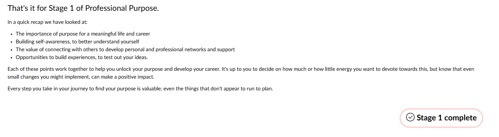
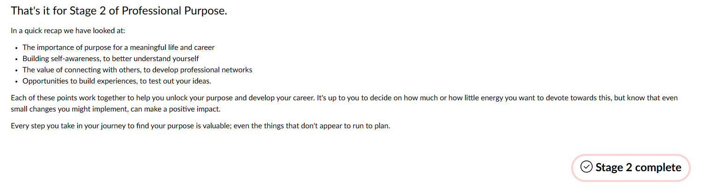
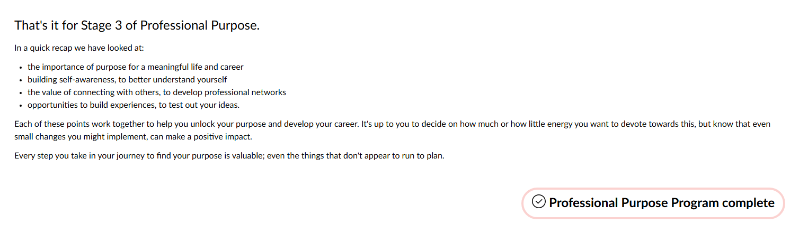

Task 6: Professional Purpose
The Professional Purpose online modules (all three stages) and workshop, what I learned about my own professional purpose, and my plans going forward.
Evidence



Workshop notes
I attended the workshop in class. It covered:
- identifying my strengths and values
- possible career pathways, and how to get there
- building a professional network, including a LinkedIn profile
- setting short- and long-term goals
Reflection
Situation
I have a rough direction for my career: astrophysics research, which would mean postgraduate study. Right now I’m focused on building skills like programming and data analysis.
Task
The Professional Purpose program asked me to think about purpose, self-awareness, connecting with others and building experiences. I completed all three stages of the online modules and attended the workshop in class.
Action
Working through the modules raised two main questions for me: what I actually want my work to achieve, and how I can get relevant experience while I’m still studying.
Result
I learned that it’s fine not to have my purpose fully figured out yet, and that knowing my strengths and interests makes choices clearer. I also learned that connections open doors that skills alone don’t, and that trying things is the best way to find out what fits.
What I’d do differently / next
Going forward, I plan to build my professional network, get relevant experience, keep building my skills, and explore the career paths open to me (details in the table below).
My development plan
| Goal | Actions | Timeframe |
|---|---|---|
| Build a professional network | Talk to lecturers, join societies, build my LinkedIn profile and go to events | Over my degree |
| Get relevant experience | Look for internships, research placements or volunteering | Over my degree |
| Keep building my skills | Programming, data analysis and communication | Over my degree |
| Explore careers in astrophysics research | Talk to researchers and postgraduate students about their paths | Over my degree |